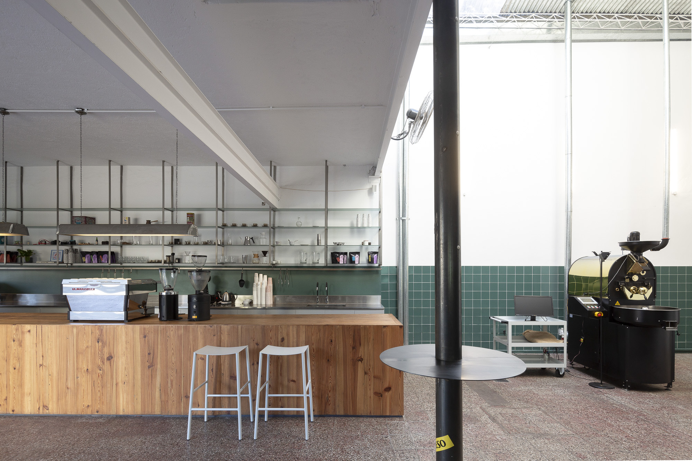
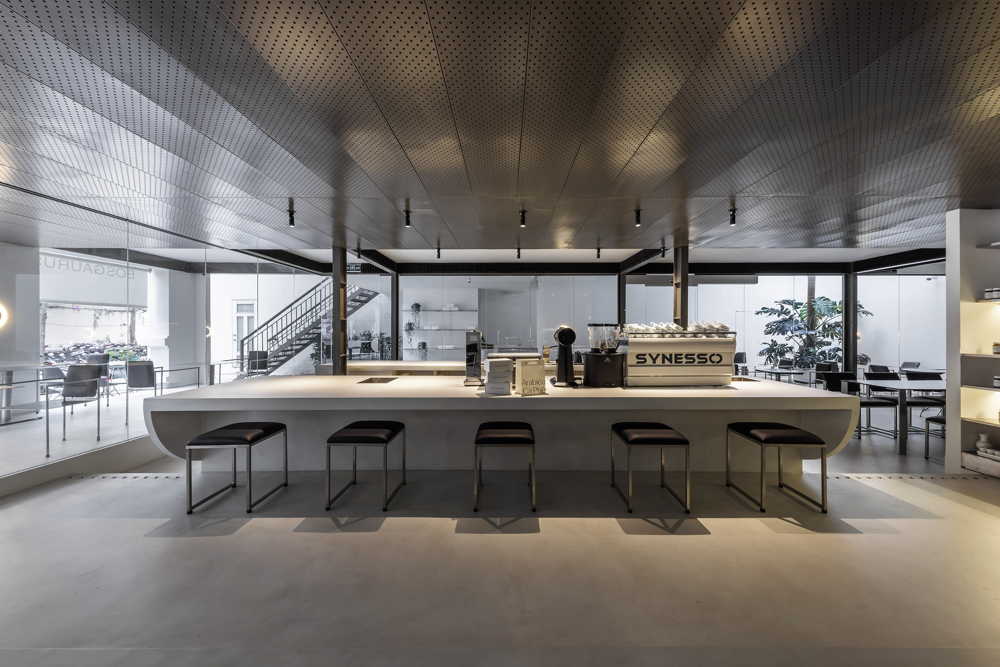
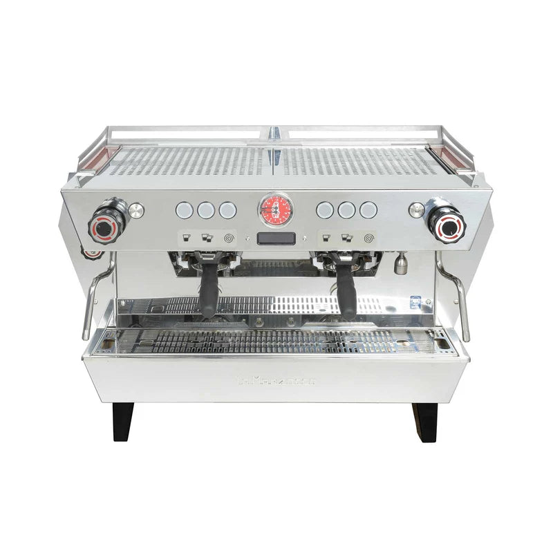
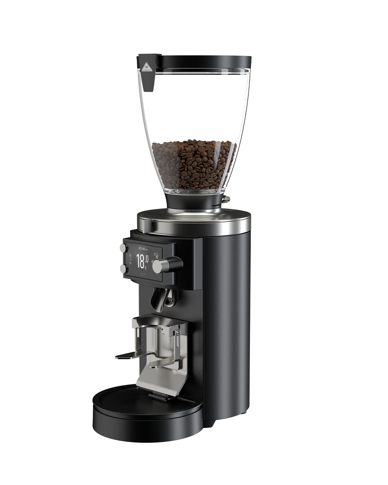

Tesis de inversión
MERIDIANO no es una cafetería: es la infraestructura comercial europea de una cadena verticalmente integrada finca→taza. El motor de rentabilidad es un centro de tueste industrial ligero (PROBAT P12) en polígono, con canales B2B, retail y e-commerce; el showroom urbano es el escaparate de marca que se abre después, financiado por el flujo del hub.
Las siete frases que sostienen la tesis
El margen está en el kilo, no solo en la taza
Comprar verde de especialidad directamente a la cooperativa propia (sin trader) y tostarlo en destino multiplica el valor del kilo ×5–7 en B2B y ×9–11 en retail. La taza es la línea de mayor margen unitario, pero el kilo es la línea escalable.
Separar tueste y showroom reduce el mayor riesgo del proyecto
El dossier previo (ACTIVO_01) identificó como gates críticos la extracción, la comunidad y la acometida en un local céntrico. La nave puede simplificar el encaje, pero no lo garantiza: actividad, emisiones, incendios, potencia y acceso de público requieren validación municipal y técnica antes de firmar.
B2B y e-commerce primero, ladrillo premium después
La Guashira (Alicante) es una referencia análoga observable de finca + tueste + venta online + campus. Sirve como benchmark operativo y comercial, pero no demuestra por sí sola la rentabilidad ni el calendario de MERIDIANO.
La JV puede integrar origen y acceso comercial europeo
La combinación CCM + Grupo Biomesa sería diferencial si se acreditan capacidad de suministro, calidad Q-Grader, trazabilidad por lote, importación UE y continuidad logística. MERIDIANO monetiza esa cadena en destino; los contratos y evidencias que la sostienen son un gate de inversión, no un supuesto gratuito.
El café venezolano está infrarepresentado en el specialty europeo
La rareza puede sostener diferenciación y precio, pero debe validarse con un mapa competitivo, pruebas de demanda y certificados de cata por lote. No se tratará como “categoría vacía” hasta completar ese estudio.
A Coruña es puerto, TEN-T y coste operativo contenido
Puerto Atlántico con conexión a la red transeuropea, rentas industriales y comerciales muy por debajo de Madrid/Barcelona, y una escena specialty aún poco competida en Galicia.
Disciplina de capital por fases con gates medibles
Cada tramo de inversión se libera solo si el anterior cumple KPIs (ventas, margen, conversión). Ningún capex urbano antes de validar el hub.


Criterio de evidencia: las fotografías fijan lenguaje espacial, no prueban economics. Los datos de CCM y Biomesa que proceden de material corporativo permanecen sujetos a due diligence; la ficha P12 sí se contrasta con PROBAT.
Joint Venture: CCM × Grupo Biomesa
MERIDIANO se constituye como S.L. española participada por ambos socios, con sede logística y comercial en A Coruña. Cada socio aporta el eslabón que domina; la JV captura el margen de destino que hoy se queda en traders y tostadores terceros.
Socios de la alianza
Cooperativa Cafetalera de Mérida — CCM 🇻🇪
PROMOTOR / VALIDAR La información aportada describe 420+ familias, cultivo andino, procesos diferenciados, cata Q-Grader, QR por lote y exportación internacional. Antes de inversión: incorporar al data room estatutos, censo, certificados de cata, histórico exportador, capacidad comprometible y evidencia del sistema QR. Aporta si se valida: origen, volumen, calidad y narrativa trazable.
Grupo Biomesa — Biomesa Ibérica 🇪🇸
WEB CORPORATIVA Grupo Biomesa declara intermediación internacional, unidades regionales y trazabilidad blockchain con contratos por hitos. Antes de inversión: verificar entidades jurídicas, contratos, SLA, arquitectura del ledger y operaciones ejecutadas. Aporta si se valida: importación UE, estructura contractual, logística y continuidad digital finca→taza.
Arquitectura del proyecto mayor
Origen — Mérida (CCM)
Cosecha selectiva, beneficio, cata Q-Grader y QR por lote, sujetos a evidencia documental. La P12 anunciada en origen permitiría compartir recetas iniciales, pero cada instalación deberá recalibrar aire, energía, carga y entorno.
Corredor — Exportación de verde (Biomesa)
Contenedores de café verde (GrainPro/yute) La Guaira / Puerto Cabello → A Coruña. Smart contracts por hitos: embarque, arribo, despacho, calidad de arribo.
Destino — Hub MERIDIANO A Coruña
Almacén de verde + centro de tueste P12 + envasado + distribución B2B/retail/e-commerce para España y Europa occidental. Venta de verde a otros tostadores europeos como línea adicional.
Escaparate — Showroom urbano (Fase 3)
Barra specialty + retail wall + catas y formación en el centro de A Coruña, sin obrador. La ausencia de tueste reduce complejidad, pero la licencia, accesibilidad, incendios, extracción de hostelería y comunidad siguen siendo gates del local concreto.
Nombre y marca: MERIDIANO
El nombre debe contar la tesis del negocio en una palabra: una línea que une Mérida con el Atlántico, la navegación (Torre de Hércules, faro romano de A Coruña) y la precisión técnica del tueste. MERIDIANO hace las tres cosas y funciona igual en español, inglés y portugués.
Por qué MERIDIANO
Mérida está dentro de la palabra. El guiño al origen es real pero no folklórico: quien conoce el proyecto lo ve; quien no, lee precisión cartográfica y comercio atlántico.
Es la línea finca→taza hecha nombre. Un meridiano une dos latitudes: 8°35'N (Mérida) y 43°22'N (A Coruña). Esa coordenada doble es el sello de cada bolsa y de cada lote QR.
Potencialmente registrable y extensible. Admite arquitectura de marca: MERIDIANO Roastery (hub), MERIDIANO Showroom (local), MERIDIANO Verde (venta de green a tostadores), MERIDIANO Club (suscripción). CONDICIÓN Verificar disponibilidad OEPM/EUIPO clase 30, 35 y 43 antes de invertir en rotulación y packaging.
Alternativas evaluadas
| Nombre | Concepto | Lectura |
|---|---|---|
| Cumbre Atlántica | Altura andina + destino atlántico | Evocador, pero genérico en specialty |
| Faro del Ande | Torre de Hércules + Andes | Bello, riesgo de sonar a naviera |
| Ándara | Neologismo andino, sonoridad gallega | Fuerte, pero exige más inversión en explicación |
| Verde Origen (provisional previo) | Trazabilidad del verde | Descriptivo, difícil de registrar, poca distintividad |
Sistema visual
| Rol | Color | Peso |
|---|---|---|
| Azul Corporativo Profundo — dominante institucional | #002447 | 60% |
| Verde Bosque Andino — origen y sostenibilidad | #1C3F34 | 20% |
| Crema Orgánico Specialty — soporte y packaging | #F7F4EE | 10% |
| Dorado Latón Envejecido — detalle premium | #B08A57 | 7% |
| Terracota Pirólisis — acento de tueste | #9E5A3C | 3% |
Tipografías: Playfair Display (titulares), Montserrat (texto/UI), JetBrains Mono (datos, lotes, precios, coordenadas). El logo —globo con meridianos y grano como eje— se entrega en SVG vectorial dentro de este documento y admite versión monocroma para sellado de bolsas y latón para rotulación.
Cuatro modelos comparados: rentabilidad y velocidad
La idea inicial (cafetería-boutique con obrador integrado) no es la más rentable ni la más rápida. Comparamos cuatro configuraciones con el mismo rigor SUPUESTO y recomendamos una secuencia, no una apuesta única.
Opciones de modelo operativo
A · Cafetería con obrador
- Inversión total 126.800 €
- EBITDA madurez ~2.800 €/mes
- Caja positiva mes 10–14
- Payback capex ~37 meses
- Riesgo licencias ALTO
- Escalabilidad Baja
B · Hub B2B puro
- Inversión total 201.500 €
- EBITDA madurez ~5.300 €/mes
- Caja positiva mes 7–9
- Payback capex ~32 meses
- Riesgo licencias MEDIO-BAJO
- Escalabilidad Alta
C · Hub + Taproom en nave
- Fondos totales 241.690 €
- EBITDA base 7.100 caja / 5.300 norm.
- Gate de escala ≥18 k€ × 3 m
- Payback simple ~30–40 m
- Riesgo licencias MEDIO
- Escalabilidad Alta
D · Hub + Showroom centro
- Fondos totales 324.690 €
- EBITDA preliminar 9.500 caja / 7.700 norm.
- Caja positiva mes 8–10
- Payback simple ~31–38 meses
- Riesgo licencias MEDIO
- Escalabilidad Muy alta (marca)
Lectura del payback: se muestra un rango porque la caja de lanzamiento excluye temporalmente la retribución completa de dirección. La decisión inversora debe usar el Opex normalizado. Los modelos B y D siguen siendo estimaciones comparativas hasta completar el modelo mensual de 36 meses.
Líneas de ingreso del modelo recomendado (mix objetivo mes 12)
La venta de café verde a otros tostadores europeos (MERIDIANO Verde) se contabiliza en la matriz de Biomesa Ibérica, no en esta unidad; el hub actúa como su almacén y sala de muestras, reforzando la utilización del activo sin cargar su P&L.
Unit economics y estructura financiera
Enfoque bottom-up. Todo número tiene un driver operativo; los precios sin IVA salvo indicación. Café tostado al 10% IVA, servicios de barra al 10%, formación al 21%.
El activo núcleo: PROBAT P12
| Parámetro | Valor | Fuente / lógica |
|---|---|---|
| Rango de lote | 1–15 kg | HECHO Ficha oficial PROBAT P Series |
| Capacidad nominal | hasta 40 kg/h | HECHO Para café; varía con producto, perfil y configuración |
| Plan de producción | 3 lotes/h × 12 kg verde | SUPUESTO Caso prudente para perfiles specialty, cambios y QC |
| Merma de tueste | 15,5% | SUPUESTO Estándar specialty medio-claro |
| Producción planificada/día (4 h) | ≈ 120 kg tostado | SUPUESTO 12 lotes × 12 kg × 0,845; no es la capacidad nominal |
| Techo operativo de planificación | ≈ 2.400 kg/mes | 20 días × 4 h; deja margen para limpieza, mantenimiento y cambios |
| Precio nueva instalada / usada | 78.000 € / 48–55.000 € | SUPUESTO Requiere oferta formal con heating eléctrico, transporte, puesta en marcha y garantías |
Coste del kilo tostado (caso base)
| Componente | €/kg tostado | Driver |
|---|---|---|
| Café verde CCM landed A Coruña (FOB + flete + despacho) | 7,69 | SUPUESTO 6,50 €/kg verde ÷ 0,845 merma · precio de transferencia JV sin trader |
| Energía de tueste (eléctrica) y nave | 0,25 | ~0,9 kWh/kg × tarifa industrial |
| Merma QC, muestras y descarte | 0,22 | 2,5% sobre producción |
| Mantenimiento y consumibles máquina | 0,14 | Provisión anual ÷ volumen |
| Coste base del kg tostado a granel | 8,30 | Antes de packaging por canal |
Margen por unidad de venta
| Unidad | PVP (sin IVA) | Coste directo | Margen | % | Lógica |
|---|---|---|---|---|---|
| Kg B2B horeca (bolsa 5 kg, reparto propio) | 21,00 | 8,95 | 12,05 | 57% | 8,30 + bolsa granel 0,25 + reparto 0,40 |
| Bolsa 250 g retail (PVP público 11,90 € IVA inc.) | 10,82 | 2,63 | 8,19 | 76% | 2,08 café + 0,38 bolsa válvula + 0,12 etiquetas QR + 0,05 sellado |
| Bolsa 250 g suscripción (2 uds/mes 21 € env. inc.) | 9,55 | 3,91 | 5,64 | 59% | Coste bolsa 2,63 + envío prorrateado 1,28 · churn 6%/mes · CAC 12 € · LTV margen ≈ 175 € |
| Kg marca blanca (mín. 60 kg/pedido) | 15,50 | 9,10 | 6,40 | 41% | Volumen sin coste de marca; llena la máquina |
| Taza specialty taproom (18 g dosis) | 2,73 | 0,52 | 2,21 | 81% | PVP 3,00 € · café 0,15 + leche/agua 0,18 + desechable/loza 0,19 |
| Maridaje premium (café + bombón origen) | 5,45 | 1,55 | 3,90 | 72% | PVP 6,00 € · ancla de ticket del taproom |
| Cata / taller (plaza, 90 min, 8 pax) | 28,90 | 6,20 | 22,70 | 79% | PVP 35 € · café + material + 1 h barista |
CAPEX por fases
| Fase 1 · Hub de tueste (nave polígono Agrela/Pocomaco, 250–300 m²) | € |
|---|---|
| PROBAT P12 nueva instalada (alt.: usada 48–55 k€) SUPUESTO | 78.000 |
| Extracción, chimenea, filtro de partículas, sonda y PLC | 12.000 |
| Destoner + 8 silos de reposo + carros inox | 6.000 |
| Línea de envasado + packaging inicial (detalle en §06) | 5.980 |
| Laboratorio QC: molino cata, kit cupping, refractómetro, básculas, Agtron/colorímetro básico | 3.500 |
| Adecuación nave: obra ligera, APPCC, almacén verde sobre palets plásticos, clima pasivo | 18.000 |
| Ingeniería, proyecto técnico, licencia actividad, ECA, altas | 6.500 |
| Logística interna: transpaleta, estanterías, palets, báscula 300 kg | 2.500 |
| Stock inicial: 3.000 kg verde CCM | 19.500 |
| Software año 1 (Cropster, Shopify, TPV, contabilidad) + web | 4.200 |
| Contingencia 10% redondeada | 15.620 |
| Subtotal Fase 1 | 171.800 |
| Caja operativa de seguridad (4 meses de opex hub) | 30.800 |
| Total Fase 1 | 202.600 |
| Fase 2 · Taproom en nave (60–80 m² dentro del hub) | € |
|---|---|
| Equipo espresso 2 grupos de especificación MVP + molino gravimétrico GbW/equivalente; KB90 reservada como ancla de Fase 3 COTIZAR | 13.500 |
| Tratamiento de agua (ósmosis + remineralización BWT) | 1.800 |
| Lavavasos, frío, vitrina maridaje | 4.300 |
| Menaje completo, loza, brew bar (detalle en §06) | 3.640 |
| Mobiliario, barra vista al tueste, acústica, señalética | 9.500 |
| Licencia degustación aneja + adecuación sanitaria | 2.800 |
| Contingencia 10% | 3.550 |
| Total Fase 2 | 39.090 |
| Fase 3 · Showroom centro A Coruña (opcional, gate por KPIs) — sin obrador | € |
|---|---|
| Ancla premium: La Marzocco KB90 2 grupos + 2º grinder + EK43S | 24.500 |
| Obra, interiorismo, mobiliario, retail wall | 33.000 |
| Licencias, proyecto, fianzas, preapertura y stock | 9.500 |
| Contingencia + caja 3 meses | 16.000 |
| Total Fase 3 | 83.000 |


Caso con P12 nueva instalada. Fondos totales F1+F2: 241.690 €. Capex productivo usado para payback simple: 210.890 € (excluye 30.800 € de caja de seguridad). Una P12 usada solo reducirá inversión si supera inspección, garantía, transporte y puesta en marcha. SUPUESTO
OPEX mensual (Fases 1+2 operando)
Break-even y escenarios
Con margen bruto ponderado del mix objetivo ≈ 64%, hay dos lecturas: 15.160 €/mes cubren la caja de lanzamiento de 9.700 €, pero el break-even normalizado para decidir inversión es 17.970 €/mes sobre Opex de 11.500 €. El gate comercial se redondea a 18.000 €/mes durante 3 meses.
| Escenario (mes 12–18) | Ventas/mes | Margen bruto | EBITDA caja | EBITDA normalizado | Payback normalizado* |
|---|---|---|---|---|---|
| Conservador — B2B lento (8 cuentas), e-comm débil | 16.400 € | 10.330 € | 630 € | −1.170 € | No repaga |
| Base — 14 cuentas B2B, 700 bolsas, taproom 35 tickets/día | 26.300 € | 16.800 € | 7.100 € | 5.300 € | ~40 m |
| Upside — 22 cuentas, marca blanca 300 kg, club 450 socios | 35.900 € | 22.600 € | 12.900 € | 11.100 € | ~19 m |
* Payback simple sobre 210.890 € de capex productivo, sin rampa, impuestos, financiación ni variación de circulante. El modelo mensual de 36 meses debe calcular el cash payback real.
Pruebe ventas, margen y nivel de Opex
Caso base defendible, pero el payback aún exige disciplina comercial.
Sensibilidad (EBITDA base ±)
| Variable | Movimiento | Impacto EBITDA/mes |
|---|---|---|
| Precio café verde landed | +1,00 €/kg | −1.030 € |
| PVP B2B | −1,00 €/kg | −500 € |
| Volumen B2B | −100 kg/mes | −1.205 € |
| Renta nave | +300 €/mes | −300 € |
| Churn suscripción | 6% → 9%/mes | −340 € |
La variable dominante es el verde. La JV puede reducir intermediación, pero no elimina volatilidad, divisa, calidad ni riesgo logístico; el precio de transferencia debe fijarse con banda anual, fórmula auditada y mecanismo de revisión. CONDICIÓN
Catálogo exhaustivo de insumos y equipamiento
Todo lo que hay que comprar, hasta la última bolsa. Precios de mercado España 2026 sin IVA SUPUESTO, a cerrar con 2–3 ofertas por partida antes de ejecutar.
Ver catálogo completo de equipos y consumibles
A · Línea de envasado y etiquetado
| Ítem | Ud./lote inicial | €/ud | Total € | Nota operativa |
|---|---|---|---|---|
| Bolsa 250 g kraft/foil, válvula desgasificación, zip, base plana | 5.000 | 0,38 | 1.900 | Stock 7 meses al mix base; impresión genérica + etiqueta |
| Bolsa 1 kg válvula (retail grande / oficinas) | 1.000 | 0,62 | 620 | |
| Bolsa 5 kg granel B2B con válvula | 400 | 1,45 | 580 | Retornables a estudiar en fase 2 |
| Selladora de banda continua horizontal (tipo FR-900) | 1 | 520 | 520 | Ritmo ~8 bolsas/min; impresor de fecha/lote integrado |
| Selladora de impulso de pedal (backup) | 1 | 160 | 160 | Redundancia obligatoria: sin sellado no hay venta |
| Impresora de etiquetas térmica industrial (Zebra ZD421 o equiv.) | 1 | 480 | 480 | Etiqueta frontal + trasera QR lote CCM/blockchain |
| Etiquetas adhesivas premium (frontal cream + trasera) | 12.000 | 0,065 | 780 | 2 por bolsa |
| Báscula de precisión envasado 0,1 g / 6 kg | 2 | 70 | 140 | |
| Dosificador/tolva de llenado con soporte | 1 | 350 | 350 | Manual fase 1; auger automático solo >1.500 kg/mes |
| Mesa de trabajo acero inox 2 m + utillaje | 1 | 450 | 450 | |
| Subtotal línea de envasado | 5.980 | 2.100 € equipo + 3.880 € packaging inicial; ambos incluidos en fondos de lanzamiento |
B · Barra y sala (taproom Fase 2)
| Ítem | Uds. | €/ud | Total € | Nota |
|---|---|---|---|---|
| Tazas espresso + platillo loza premium (Acme/Loveramics) | 36 | 8,5 | 306 | 3 rotaciones de 12 |
| Tazas flat white / cappuccino | 36 | 9,5 | 342 | |
| Vasos filtrado / taster (vidrio doble pared) | 24 | 7 | 168 | |
| Vasos takeaway compostables + tapa (PLA) | 3.000 | 0,16 | 480 | Con sello de marca 1 tinta |
| Jarras de leche inox 350/600 ml | 6 | 22 | 132 | |
| Básculas de barra (Acaia Lunar o equiv.) | 2 | 250 | 500 | |
| Tampers, distribuidor, portafiltros extra, knockbox | 1 set | 380 | 380 | |
| Brew bar: V60, Chemex, AeroPress, hervidor cuello de cisne, filtros | 1 set | 520 | 520 | También material de catas |
| Kit cupping SCA (cucharas, bowls, kettles) | 2 sets | 180 | 360 | |
| Menaje maridaje: pizarras, pinzas, campanas, servilletero | 1 set | 452 | 452 | «Joyería comestible» (ACTIVO_05) |
| Subtotal menaje y brew bar | 3.640 |
C · Merchandising y retail no-café
| Ítem | Uds. | Coste € | PVP € | Margen |
|---|---|---|---|---|
| Taza cerámica logo MERIDIANO (caja regalo) | 200 | 5,20 | 16,50 | 68% |
| Tote bag algodón orgánico serigrafiada | 300 | 3,10 | 12,00 | 74% |
| Camiseta staff/venta (bordado latón) | 80 | 9,80 | 28,00 | 65% |
| Dripper V60 co-branded + pack filtros | 60 | 6,40 | 19,50 | 67% |
| Set regalo corporativo (2×250 g + taza + tarjeta lote QR) | 150 | 11,90 | 34,00 | 65% |
| Postales/etiquetas coordenadas 8°35'N→43°22'N | 1.000 | 0,18 | — | Regalo en pedidos |
| Inversión inicial merchandising | ≈ 5.100 | Rotación estimada 4–5 meses · dentro de preapertura F2/F3 |
D · Consumibles operativos recurrentes (€/mes al mix base)
| Partida | €/mes | Driver |
|---|---|---|
| Bolsas + etiquetas + sellado (retail y B2B) | 490 | 700 bolsas 250 g + 60 de 1 kg + 40 de 5 kg |
| Leche fresca gallega + alternativas vegetales | 340 | ~35 tickets/día taproom, 60% con leche |
| Vasos takeaway, servilletas, removedores | 150 | |
| Bombonería/maridaje (chocolate origen venezolano) | 310 | Coste 1,55 €/maridaje × ~200/mes · doble narrativa cacao+café |
| Cartonaje e-commerce, relleno, cinta marca | 120 | ~250 envíos/mes |
| Química de limpieza (Cafiza, Rinza, filtros agua) | 95 | |
| Total consumibles | 1.485 | Incluido en el cálculo de coste directo por unidad |
Procesos: del contenedor a la taza
La operación se diseña como light manufacturing + retail: marcha hacia adelante sin cruces, calendario de tueste separado del servicio y APPCC desde el día 1.
Secuencia operativa
Recepción e importación
Contenedor CCM (sacos 30/69 kg en GrainPro) despachado por Biomesa Ibérica en el puerto de A Coruña. Control de arribo: humedad (objetivo 10,5–11,5%), actividad de agua y cata contra muestra pre-embarque. El alta en Cropster es obligatoria; el registro blockchain solo se activa cuando la integración Biomesa y la cadena de custodia estén verificadas.
Almacenamiento del verde
Zona seca de la nave, palets plásticos (no porosos), 18–22 °C, HR < 65%, control de plagas contratado. FIFO estricto por lote QR. Stock de seguridad: 8 semanas de consumo.
Tueste programado (PROBAT P12)
2–3 días de tueste/semana en bloques de 4 h, fuera del horario del taproom. Las recetas compartidas desde Mérida se usan como punto de partida y se recalibran en A Coruña. Cada lote: muestra QC, color, cata a 24 h. Desgasificación 4–10 días según canal.
Envasado y etiquetado
Pesado (báscula 0,1 g) → llenado por tolva → sellado banda continua con impresión de fecha/lote → etiqueta frontal + trasera con QR de trazabilidad. Objetivo: 120 bolsas/hora con 1 operario. Registro de mermas semanal.
Distribución multicanal
B2B: ruta propia 2 días/semana (A Coruña–Santiago–Ferrol) + agencia para resto de España. E-commerce: cut-off 13:00, envío 24–72 h, gratis > 35 € (regla La Guashira). Suscripción: tueste del lunes, envío del martes.
Taproom y experiencia
Barra frente al tueste: el cliente ve la máquina trabajar. Carta corta (espresso, filtrado, maridaje). Catas y visitas guiadas los sábados (35 €/plaza). Cada mesa con tarjeta QR del lote servido: la trazabilidad es el espectáculo.
Calidad y mejora continua
KPIs semanales: kg tostados, merma, % conversión sala→bolsa, tickets/día, MRR suscripción, churn, NPS B2B. Cata de calibración semanal del equipo. Auditoría APPCC trimestral.
Estructura de personal (Fases 1+2)
| Rol | Dedicación | Coste empresa/mes | Responsabilidad |
|---|---|---|---|
| Maestro tostador / responsable producción | FT | 2.450 € | Tueste, QC, compras, APPCC, formación |
| Operario envasado + logística | PT 25 h | 1.150 € | Envasado, pedidos, reparto B2B |
| Barista taproom (Fase 2) | PT 30 h + refuerzo sáb. | 1.300 € | Barra, catas, venta retail |
| Dirección comercial (socio gestor) | Normalizada | 1.800 € | B2B, marca blanca, alianzas y reporting; puede diferirse en caja, pero no eliminarse del caso inversor SUPUESTO |
| Nómina caja lanzamiento | 4.900 € | Retribución de dirección temporalmente diferida | |
| Nómina normalizada de decisión | 6.700 € | Incluye dirección comercial/gestión |
Estrategia comercial (benchmark adaptado de La Guashira)
La Guashira demuestra públicamente la coexistencia de finca propia, tueste en Alicante, e-commerce, suscripción, venta de verde y recogida en campus. Se toma como referencia análoga de canal, no como validación financiera ni prueba de que la misma secuencia funcionará en A Coruña.
Tácticas y ventajas comerciales
Tácticas observadas en la referencia
· Frescura semanal como promesa verificable.
· Envío gratis > 35 € para elevar el pedido medio.
· Packs de perfiles y formatos como puerta de entrada y regalo.
· Suscripción como ingreso recurrente.
· Venta de café verde a tostadores y prosumers.
· Accesorios de preparación en e-commerce.
· Campus, formación y talleres como canal de relación.
· Contenido SEO de categoría. ADAPTAR / TESTEAR
Ventajas diferenciales a demostrar
· Origen venezolano infrarepresentado y lotes de alta puntuación documentada.
· QR CCM + trazabilidad Biomesa auditables de extremo a extremo.
· P12 en origen y destino como lenguaje técnico común, con recalibración local.
· Cacao fino venezolano como extensión coherente de maridaje y retail.
· Gifting corporativo con impacto respaldado por evidencias.
· Puerto de A Coruña como nodo logístico, sujeto a cotización real de rutas y frecuencia.
Embudo comercial por canal (objetivos año 1)
| Canal | Acción | KPI mes 12 |
|---|---|---|
| B2B horeca | 50 visitas/mes con muestras + cesión de molino en comodato a cuentas ≥ 25 kg/mes | 14 cuentas · 500 kg/mes |
| E-commerce | SEO + Meta/Google Ads (CAC ≤ 12 €) + email flows | 250 pedidos/mes · AOV 32 € |
| Suscripción | Descuento 12% + acceso a microlotes exclusivos | 180 socios · churn ≤ 6% |
| Marca blanca | 2 acuerdos con retailers/hostelería premium gallega | 150 kg/mes |
| Taproom | Apertura mes 7; catas sábados; visitas al tueste | 35 tickets/día · conversión a bolsa ≥ 18% |
| Corporate gifting | Campañas sept–dic; catálogo B2B | ≥ 8.000 € en Q4 |
Roadmap 0–24 meses con gates de capital
Hitos y gates de capital
Mes 0–2 · Constitución y gates previos DESEMBOLSO: 15 k€
Constitución S.L. y pacto de socios · registro de marca OEPM/EUIPO · búsqueda de nave con informe de compatibilidad urbanística CONDICIÓN · pedido P12 (lead time 3–5 meses) · primer contenedor de verde en tránsito · web y preventa.
Mes 3–5 · Montaje del hub HASTA COMPLETAR F1: +187,6 k€
Adecuación de nave, instalación P12 + extracción, línea de envasado, APPCC, altas sanitarias y caja de seguridad. El calendario de desembolso debe acompasarse a contrato, fabricación, FAT/SAT y licencias; no liberar el tramo completo sin hitos.
Mes 6 · Encendido y primeras cuentas GATE 1: máquina operativa + 5 cuentas B2B firmadas
Producción propia en A Coruña. Ofensiva comercial horeca. Objetivo salida: 6.000 €/mes de ventas.
Mes 7–9 · Taproom DESEMBOLSO: 39,09 k€ · GATE 2: ≥10 k€/mes + licencia validada
Apertura de la sala solo con compatibilidad de uso, accesibilidad, incendios y sanidad resueltos. Catas, visitas y venta directa deben probar conversión sin comprometer el gate normalizado de 18 k€/mes.
Mes 10–15 · Escala GATE 3: ventas ≥ 18 k€/mes × 3 meses, MB ≥ 60%
Marca blanca, gifting Q4, suscripción a 180 socios, exploración B2B norte de Portugal. Decisión sobre Fase 3.
Mes 16–24 · Fase 3 opcional: showroom centro DESEMBOLSO: 83 k€ (solo si Gate 3 cumplido)
Local céntrico sin obrador, KB90 como ancla y retail wall. Su apertura sigue condicionada a compatibilidad de uso, comunidad, accesibilidad, incendios, ventilación y sanidad. Una segunda ciudad solo se estudia con showroom en EBITDA positivo, hub ≥ 18 k€/mes y utilización ≥ 55%.
Riesgos y mitigaciones
| Riesgo | Severidad | Mitigación |
|---|---|---|
| País/logística Venezuela: retrasos de embarque, cambios regulatorios de exportación | Alta | Stock de seguridad 8 semanas · dual-sourcing contractual de contingencia sin confundir el origen de marca · pagos y liberación documental por hitos verificables |
| Licencias y actividad (nave) | Alta hasta validar | Informe municipal de compatibilidad, proyecto técnico, incendios, emisiones, extracción y encaje sanitario ANTES de firmar o liberar capex NO-GO |
| Concentración comercial B2B lenta | Alta | Gate de capital por fases; pivote a marca blanca y venta de verde si mes 9 < 12 k€/mes |
| Precio del verde / divisa | Media | Precio de transferencia JV con banda anual pactada; el proveedor es socio y participa del margen de destino |
| Dependencia de personas clave (maestro tostador) | Media | Perfiles Cropster documentados, recetas recalibradas entre Mérida y A Coruña y formación cruzada CCM↔Coruña |
| Competencia y demanda specialty local | Media–alta hasta validar | Mapa competitivo, catas pagadas, preventa, cartas de intención y prueba de precio; la infrarepresentación venezolana no equivale por sí sola a demanda ni a moat |
| Sobredimensionar la experiencia antes de validar (error clásico) | Media | El showroom céntrico es Fase 3 condicionada, nunca el punto de partida |
Cuatro preguntas duras del inversor (y la respuesta corta)
«¿Por qué no depende de una cafetería?»
Porque el caso objetivo concentra el margen en kilos B2B/retail y mantiene el taproom como canal de prueba y marca. El mix debe demostrarse mensualmente; no se usa una estadística genérica de cierres como argumento.
«¿Qué pasa si Venezuela se bloquea?»
El stock de ocho semanas compra tiempo, no resuelve el riesgo. La continuidad exige un contrato de suministro alternativo y etiquetado de origen inequívoco; hasta entonces, la contingencia colombiana es una condición por cerrar.
«¿Por qué vosotros?»
La combinación de origen, importación UE y capacidad de tueste puede formar una ventaja estructural si contratos, calidad, costes y trazabilidad superan due diligence. Hoy es una tesis verificable, no un moat probado.
«¿Cuándo recupero?»
En el caso base, el payback simple es ~30 meses con caja de lanzamiento y ~40 meses con Opex normalizado. El cash payback real exige un modelo mensual con rampa, circulante, impuestos y financiación.
Cierre ejecutivo
El proyecto es atractivo por su integración de origen, activo productivo y canales de margen, pero todavía necesita convertir contratos, licencias y demanda en evidencia verificable.
Tres riesgos principales
La nave y cualquier acceso de público son un no-go hasta acreditar compatibilidad urbanística, emisiones, incendios, ventilación y encaje sanitario. Recomendación: contrato condicionado y validación técnica independiente antes de capex.
Origen, calidad, precio de transferencia, continuidad logística y blockchain son capacidades declaradas, no todavía probadas. Recomendación: contrato marco, certificados por lote, SLA y contingencia de suministro en el data room.
El caso conservador no cubre el Opex normalizado y una P12 infrautilizada destruye retorno. Recomendación: preventa, cartas B2B y capital por hitos; congelar Fase 3 si no se sostienen 18 k€/mes.
Tres oportunidades de alta rentabilidad
El modelo estima 76% de margen en bolsa retail y 57% en kg B2B gracias a origen directo y tueste propio. La rentabilidad aumenta si precio, calidad y coste landed se validan.
B2B, marca blanca, e-commerce y suscripción comparten la P12 y la misma infraestructura; cada kilo incremental por encima del break-even absorbe costes fijos con poca inversión adicional.
El taproom prueba conversión y experiencia; el showroom con KB90 solo se activa tras el gate. Esta secuencia conserva la opción de réplica geográfica sin financiar primero el activo más arriesgado.
Aprobar un primer tramo de 15.000 € para due diligence, local, licencias, ofertas vinculantes y preventa; no liberar el resto de Fase 1 hasta cumplir esos gates. Fase 2 exige licencia validada y tracción comercial; Fase 3 solo se activa con ventas ≥ 18.000 €/mes durante tres meses y margen bruto ≥ 60%. En el formato actual no se recomienda desembolsar de una vez los 241.690 €.
Fuentes, supuestos y data room
Fuentes consultadas
· CCM: datos aportados por el promotor — 420+ familias, puntuaciones, capacidad, exportaciones y trazabilidad pendientes de evidencia documental
· Grupo Biomesa / Biomesa Ibérica — fuente corporativa sobre intermediación, contratos y trazabilidad; requiere verificación jurídica y operativa independiente
· La Guashira Specialty Coffee — benchmark observable de finca, tueste en España y canales; no valida los economics de MERIDIANO
· PROBAT P Series — ficha oficial · folleto técnico oficial — rango, capacidad, configuraciones y transferencia de recetas con ajustes
· La Marzocco KB90 · Mahlkönig E65S GbW — referencias oficiales de la maquinaria visualizada; compra sujeta a oferta y servicio en España
· Cuervo Coffee Roasters / Mutar · Bosgaurus Coffee Roasters / NU — referencias visuales de arquitectura, no evidencia económica
· Dossier interno ACTIVO_01–06 (v1.0, 2026-07-12) — base normativa, capex/opex histórico y plan de interiorismo
Jerarquía de evidencia: una web corporativa acredita lo que una entidad declara, no que la capacidad, el contrato o el rendimiento estén probados. Las decisiones de capital se apoyarán en documentos del data room, ofertas vinculantes y validación técnica independiente.
Convención de etiquetado
HECHO dato verificado en fuente · SUPUESTO criterio de modelización con driver explícito · CONDICIÓN requisito previo sin el cual no ejecutar.
Checklist data room (para due diligence)
01 · Pacto de socios JV y cap table 02 · Contrato marco de suministro CCM→JV con fórmula de precio 03 · Informe compatibilidad urbanística de la nave 04 · Oferta y contrato PROBAT (nueva o usada certificada) 05 · Proyecto técnico de instalación y extracción 06 · Plan APPCC y registro sanitario 07 · Registro de marca OEPM/EUIPO 08 · Modelo financiero editable (36 meses, 3 escenarios) 09 · Cartas de intención B2B y marca blanca 10 · Pólizas de seguro (transporte, RC producto, avería maquinaria) 11 · Certificados de cata SCA de lotes CCM 12 · Acuerdo de trazabilidad blockchain Biomesa (SLA)